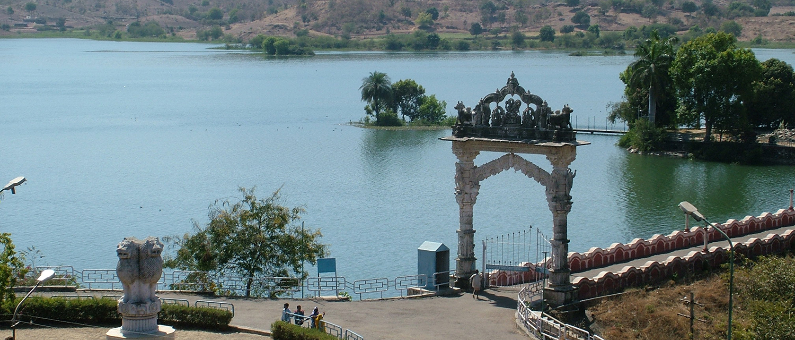

destination

banswara
Banswara gets its name from the ‘bans’ or bamboo trees that once grew here in abundance. It is dominated by Bhil tribals (popularly known as the bow men of Rajasthan) who make up more than half the total population of the region. History states that Banswara was ruled by a Bhil ruler named Bansia or Wasna and the place derived its name from him. Bansai was defeated by Jagmal Singh who crowned himself Banswara’s first Maharaval.
The district is a mix of different geographies with fertile plains of maize, wheat, rice, cotton soya bean and gram covering the entire central and western regions, while the Aravallis range make up the eastern side. The rich teak forests and mango, khajur (date) and mahua trees are home to diverse wildlife. Archaeological significance of Arthuna has made it one of the prime attractions of Banswara.
It was about 72 kilometres in length from north to south and 53 kilometres in breadth from east to west. The district was formerly a princely state ruled by the Maharavals.